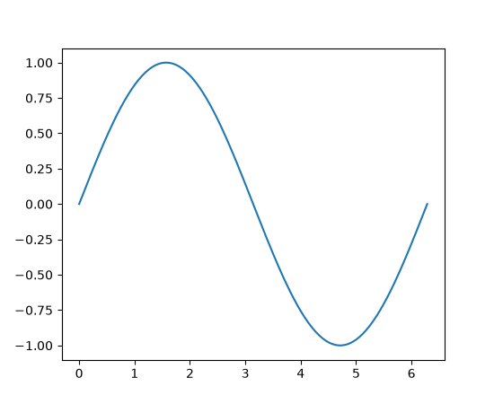

Getting started#
Installation quick-start#
pip install matplotlib
conda install -c conda-forge matplotlib
pixi add matplotlib
uv add matplotlib
Warning
uv usually installs its own versions of Python from the
python-build-standalone project, and only recent versions of those
Python builds (August 2025) work properly with the tkagg backend
for displaying plots in a window. Please make sure you are using uv
0.8.7 or newer (update with e.g. uv self update) and that your
bundled Python installs are up to date (with uv python upgrade
--reinstall). Alternatively, you can use one of the other
supported GUI frameworks, e.g.
uv add matplotlib pyside6
Draw a first plot#
Here is a minimal example plot:
import matplotlib.pyplot as plt
import numpy as np
x = np.linspace(0, 2 * np.pi, 200)
y = np.sin(x)
fig, ax = plt.subplots()
ax.plot(x, y)
plt.show()
(Source code, 2x.png, png)
{kind=link}
{kind=link}
{kind=link}

If a plot does not show up please check Troubleshooting.
Where to go next#
Check out Plot types to get an overview of the types of plots you can create with Matplotlib.
Learn Matplotlib from the ground up in the Quick-start guide.